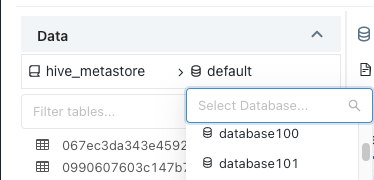

Upgrade tables and views to Unity Catalog
This article describes how to upgrade tables and views registered in your existing Hive metastore to Unity Catalog.
To determine whether a table is currently registered in Unity Catalog, check the catalog name. Tables in the catalog hive_metastore are registered in the Hive metastore. Any other catalogs listed are governed by Unity Catalog.
Note
Unity Catalog manages partitions differently than Hive. Hive commands that directly manipulate partitions are not supported on tables managed by Unity Catalog.
Upgrade a schema or multiple tables to Unity Catalog
You can copy complete schemas (databases) and multiple external tables from your default Hive metastore to the Unity Catalog metastore using the Catalog Explorer upgrade wizard.
Requirements
Before you begin, you must have:
A storage credential with an IAM role that authorizes Unity Catalog to access the tables’ location path.
An external location that references the storage credential you just created and the path to the data on your cloud tenant.
CREATE EXTERNAL TABLEpermission on the external locations of the tables to be upgraded.
Upgrade process
Click
 Catalog in the sidebar to open the Catalog Explorer.
Catalog in the sidebar to open the Catalog Explorer.Select
hive_metastoreas your catalog and select the schema (database) that you want to upgrade.Click Upgrade at the top right of the schema detail view.
Select all of the tables that you want to upgrade and click Next.
Only external tables in formats supported by Unity Catalog can be upgraded using the upgrade wizard.
Set the destination catalog, schema (database), and owner for each table.
Users will be able to access the newly created table in the context of their privileges on the catalog and schema.
Table owners have all privileges on the table, including
SELECTandMODIFY. If you don’t select an owner, the managed tables are created with you as the owner. Databricks generally recommends that you grant table ownership to groups. To learn more about object ownership in Unity Catalog, see Manage Unity Catalog object ownership.To assign the same catalog and schema to multiple tables, select the tables and click the Set destination button.
To assign the same owner to multiple tables, select the tables and click the Set owner button.
Review the table configurations. To modify them, click the Previous button.
Click Create Query for Upgrade.
A query editor appears with generated SQL statements.
Run the query.
When the query is done, each table’s metadata has been copied from Hive metastore to Unity Catalog. These tables are marked as upgraded in the upgrade wizard.
Define fine-grained access control using the Permissions tab of each new table.
Modify your workloads to use the new table.
Upgrade a single external table to Unity Catalog
You can copy an external table from your default Hive metastore to the Unity Catalog metastore using the Catalog Explorer.
Requirements
Before you begin, you must have:
A storage credential with an IAM role that authorizes Unity Catalog to access the table’s location path.
An external location that references the storage credential you just created and the path to the data on your cloud tenant.
CREATE EXTERNAL TABLEpermission on the external location of the table to be upgraded.
Upgrade process
To upgrade an external table:
Click
Catalog in the sidebar to open Catalog Explorer.Select the database, then the table, that you want to upgrade.
Click Upgrade action in the top-right corner of the table detail view.
Select your destination catalog, schema (database), and owner.
Users will be able to access the newly created table in the context of their privileges on the catalog and schema.
Table owners have all privileges on the table, including
SELECTandMODIFY. If you don’t select an owner, the managed table is created with you as the owner. Databricks generally recommends that you grant table ownership to groups. To learn more about object ownership in Unity Catalog, see Manage Unity Catalog object ownership.Click Upgrade.
The table metadata is now copied to Unity Catalog, and a new table has been created. You can now use the Permissions tab to define fine-grained access control.
Modify existing workloads to use the new table.
Note
If you no longer need the old table, you can drop it from the Hive Metastore. Dropping an external table does not modify the data files on your cloud tenant.
Upgrade a view to Unity Catalog
After you upgrade all of a view’s referenced tables to the same Unity Catalog metastore, you can create a new view that references the new tables.
Upgrade a table to a Unity Catalog managed table
To upgrade a table to Unity Catalog as a managed table:
Create a new Unity Catalog table by querying the existing table. Replace the placeholder values:
<catalog>: The Unity Catalog catalog for the new table.<new-schema>: The Unity Catalog schema for the new table.<new-table>: A name for the Unity Catalog table.<old-schema>: The schema for the old table, such asdefault.<old-table>: The name of the old table.
CREATE TABLE <catalog>.<new-schema>.<new-table> AS SELECT * FROM hive_metastore.<old-schema>.<old-table>;
df = spark.table("hive_metastore.<old-schema>.<old-table>") df.write.saveAsTable( name = "<catalog>.<new-schema>.<new-table>" )
%r library(SparkR) df = tableToDF("hive_metastore.<old-schema>.<old-table>") saveAsTable( df = df, tableName = "<catalog>.<new-schema>.<new-table>" )
val df = spark.table("hive_metastore.<old-schema>.<old-table>") df.write.saveAsTable( tableName = "<catalog>.<new-schema>.<new-table>" )
If you want to migrate only some columns or rows, modify the
SELECTstatement.Note
This command creates a managed table in which data is copied into the storage location that was nominated when the metastore was set up. To create an external table, where a table is registered in Unity Catalog without moving the data in cloud storage, see Upgrade a single external table to Unity Catalog.
Grant account-level users or groups access to the new table. See Manage privileges in Unity Catalog.
After the table is migrated, users should update their existing queries and workloads to use the new table.
Before you drop the old table, test for dependencies by revoking access to it and re-running related queries and workloads.